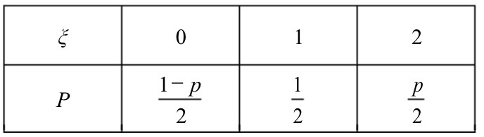

2018-浙江-理-7 【随机事件与随机变量】
设0<p<1,随机变量ξ的分布列是
A.D(ξ)减小
B.D(ξ)增大
C.D(ξ)先减小后增大
D.D(ξ)先增大后减小

2017-浙江-理-8 【随机事件与随机变量】
已知随机变量ξi满足P(ξi=1)=pi,P(ξi=0)=1−pi,i=1,2.若0<p1<p2<12,则
A.E(ξ1)<E(ξ2),D(ξ1)<D(ξ2)
B.E(ξ1)<E(ξ2),D(ξ1)>D(ξ2)
C.E(ξ1)>E(ξ2),D(ξ1)<D(ξ2)
D.E(ξ1)>E(ξ2),D(ξ1)>D(ξ2)
2014-浙江-理-9 【随机事件与随机变量】
已知甲盒中仅有1个球且为红球,乙盒中有m个红球和n个蓝球(m≥3,n≥3),
从乙盒中随机抽取i(i=1,2)个球放入甲盒中
(a)放入i个球后,甲盒中含有红球的个数记为ξi(i=1,2);
(b)放入i个球后,从甲盒中取1个球是红球的概率记为pi(i=1,2);
则
A.p1>p2,E(ξ1)<E(ξ2)
B.p1<p2,E(ξ1)>E(ξ2)
C.p1>p2,E(ξ1)>E(ξ2)
D.p1<p2,E(ξ1)<E(ξ2)
2014 浙江 理 12 【随机事件与随机变量】
随机变量ξ的取值为0,1,2,若P(ξ=0)=15,E(ξ)=1,则D(ξ)=()